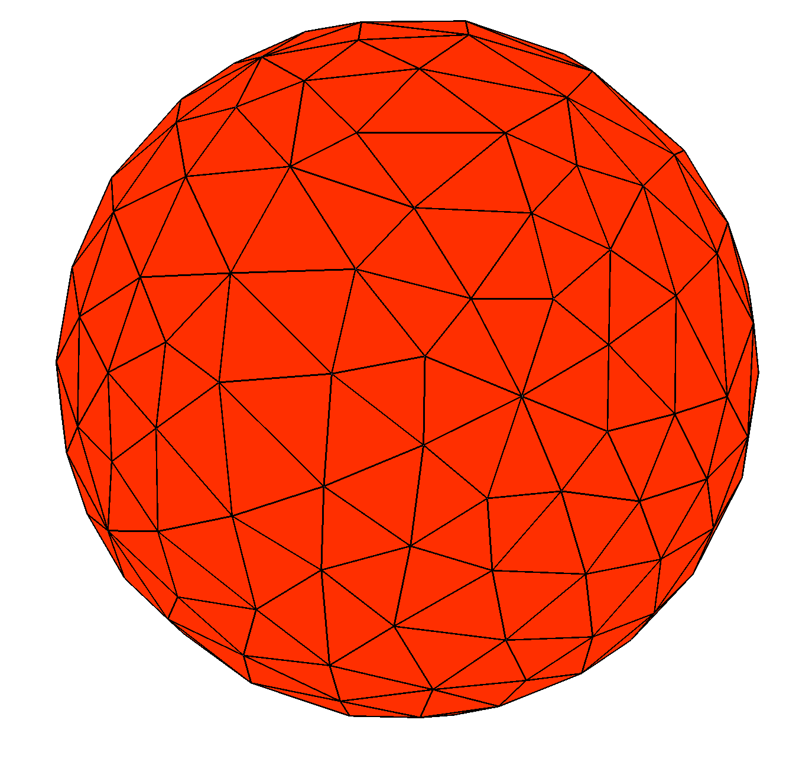
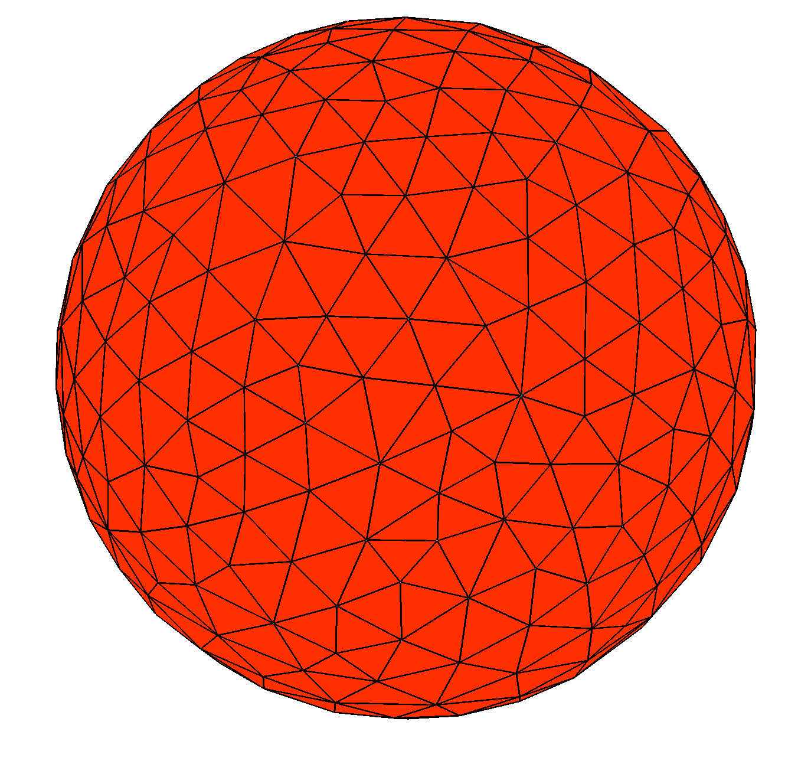
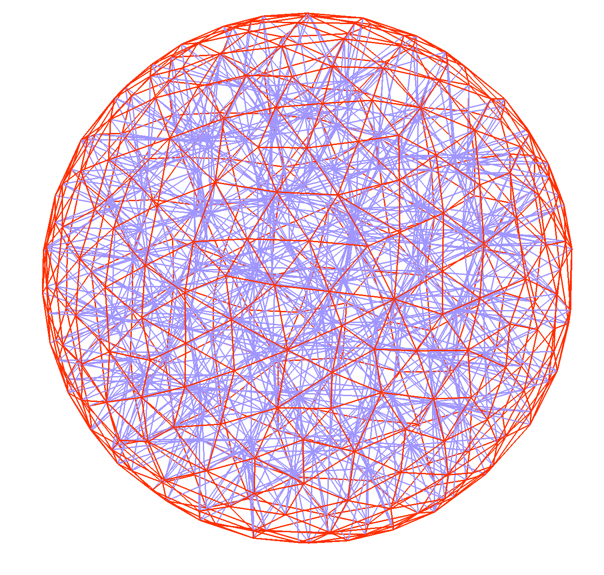
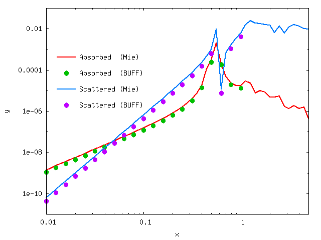

Mie scattering in buff-em
In this example we use buff-scatter to solve the canonical textbook
problem of Mie scattering---the scattering of a plane wave
from a dielectric sphere. The files for this example are in the
share/buff-em/examples/MieScattering subdirectory of the
buff-em source distribution.
gmsh geometry file and volume mesh for a single sphere
We begin by creating a
gmsh
geometry file for a sphere: (Sphere.geo).
(Note that, because we will be producing a volume mesh instead
of a surface mesh, the gmsh geometry file is not quite
the same as the file Sphere.geo that we used to
generate surface meshes for
Mie scattering in scuff-em.
We turn this geometry file into coarser and finer volume meshes by running the following commands:
% gmsh -3 -clscale 1.0 Sphere.geo
% RenameMesh3D Sphere.msh
% gmsh -3 -clscale 0.65 Sphere.geo
% RenameMesh3D Sphere.msh
Here the -3 option to gmsh says we want a 3D (volume) mesh
(as opposed to -2 for a 2D (surface) mesh. The -clscale
option sets an overall multiplicative prefactor that scales
the fineness of the meshing.
Also, the bash script RenameMesh3D
is a little utility that calls
buff-analyze
to count the number of interior tetrahedon faces in the mesh
(equal to the number of SWG basis functions, and thus
the dimension of the VIE matrix) and rename the meshfile to
reflect this information. The script also changes the file
extension from .msh to .vmsh to remind me that this is a
volume mesh instead of a surface mesh.
Thus the above steps produce files named
Sphere_677.vmsh and Sphere_1675.vmsh.
You can open these files in gmsh to see what they
look like:


Of course, from these pictures we can't tell that we are working with volume meshes instead of surface meshes. To see the outlines of the tetrahedra, turn off the "Surface faces" display in the gmsh "Mesh" options tab:

buff-em geometry file for a single sphere
Next we create a
buff-em geometry file
that will tell buff-scatter about our geometry, including both
the volume mesh and the material properties (dielectric function)
of the sphere. As a first example, we'll use a dielectric model for
silicon carbide that expresses the relative permittivity as a
rational function of ; in this case we'll call the
geometry file SiCSphere_677.buffgeo.
MATERIAL SiliconCarbide
EpsInf = 6.7;
a0 = -3.32377e28;
a1 = +8.93329e11;
b0 = -2.21677e28;
b1 = 8.93329e11;
Eps(w) = EpsInf * (a0 + i*a1*w + w*w) / ( b0 + i*b1*w + w*w);
ENDMATERIAL
OBJECT TheSphere
MESHFILE Sphere_677.vmsh
MATERIAL SiliconCarbide
ENDOBJECT
(Note that, because this particular example involves an isotropic
and homogeneous (spatially constant) dielectric function, we
can simply use the MATERIAL keyword to specify a
scuff-em material property definition,
just as we would in a scuff-em geometry file. To specify
anisotropic and/or inhomogeneous materials in buff-em,
we would instead use the SVTensor keyword, as documented on
the page
Spatially-varying permittivity tensors in buff-em.
We will see an example of a SVTensor specification later
in this tutorial example.)
Defining frequencies at which to run computations
Next, we create a simple file called
OmegaFile containing a
list of angular frequencies at which to run the scattering problem:
0.010
0.013
...
10.0
(We pause to note one subtlety here: As in scuff-em,
angular frequencies specified
using the --Omega or --OmegaFile arguments are interpreted in
units of m = rad/sec.
These are natural
frequency units to use for problems involving micron-sized objects;
in particular, for Mie scattering from a sphere of radius 1 μm, as
we are considering here, the numerical value of Omega is just the
quantity (wavenumber times radius) known as the
"size parameter" in the Mie scattering literature. In contrast,
when specifying functions of angular frequency like Eps(w) in
MATERIAL...ENDMATERIAL sections of geometry files or in any other
buff-em material description,
the w variable
is always interpreted in units of 1 rad/sec, because these are
the units in which tabulated material properties and functional forms
for model dielectric functions are typically expressed.)
Running the sphere computation
Finally, we'll create a little text file called Args that will contain
a list of command-line options for buff-scatter; these will include
(1) a specification of the geometry, (2) the frequency list,
(3) the name of an output file for the power, force, and torque,
and (4) a specification of the incident field, which in
this case is a linearly polarized z-traveling plane wave
with E-field pointing in the x direction:
geometry SiCSphere_677.buffgeo
PFTFile SiCSphere.PFT
OmegaFile OmegaFile
pwDirection 0 0 1
pwPolarization 1 0 0
And now we just pipe this little file into the standard input of buff-scatter:
% buff-scatter < Args
This produces the file SiCSphere_677.PFT, which contains one line
per simulated frequency; each line contains data on the scattered
and total power, the force, and the torque on the particle at that
frequency. (Look at the first few lines of the file for a text description
of how to interpret it.)
Here's a comparison of the buff-scatter results with the analytical Mie series, as computed using this Mathematica script. [Like most Mie codes, this script computes the absorption and scattering cross-sections, which we multiply by the incoming beam flux ( for a unit-strength plane wave in vacuum) to get values for the absorbed and scattered power.]

A note on computation time
As discussed here, the first
calculation done by buff-em on any given geometry
will be significantly slower than all subsequent
calculations (including the 2nd and subsequent
frequencies in the OmegaFile, as well as any
subsequent buff-scatter or buff-neq
runs you may do using the same object mesh, even
if you change the material properties). The reason
for this is that, when buff-em first assembles
the self-interaction block of the system matrix for
a given object, it stores the most time-intensive
portions of the calculation for later reuse.
(The data are stored in memory for reuse within the
same run, and are also written to disk in the form of
a binary cache file for reuse in later runs).
For the particular calculation described here,
you can accelerate this process by downloading the
(13 megabyte) cache file for the Sphere_677.vmsh
from this link:
Sphere_677.cache.
Put this file into your working directory when you
run buff-scatter, and the calculation
will proceed much more quickly.
For example, on my (fairly fast) laptop, computing the cache file takes 12 minutes, after which computing the PFT at each individual frequency takes about 20 seconds.
You can monitor the progress of the calculation by following
the buff-scatter.log file. Note that, during
computationally-intensive operations such as the VIE matrix
assembly, the code should be using all available CPU cores
on your workstation; if you find that this is
not the case (for example, by monitoring CPU usage using
htop)
you may need to
reconfigure and recompile with different openmp
configuration options.